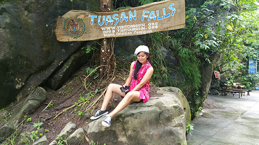

 

Mariza Bautista Ocoy
University of Southeastern Philippines
Bachelor of Science in Information Technology
since 2013-Present
Born:
August 19, 1996
Camelo Ocoy
Maglipayan Malabog Paquibato District Davao City
Age : 21
Parents:
Nilda Ocoy
Isaac Ocoy
Siblings:
Camelo Ocoy
Christopher Ocoy
Nelson Ocoy
Jason Ocoy
Pinky Ocoy
Nandy Ocoy